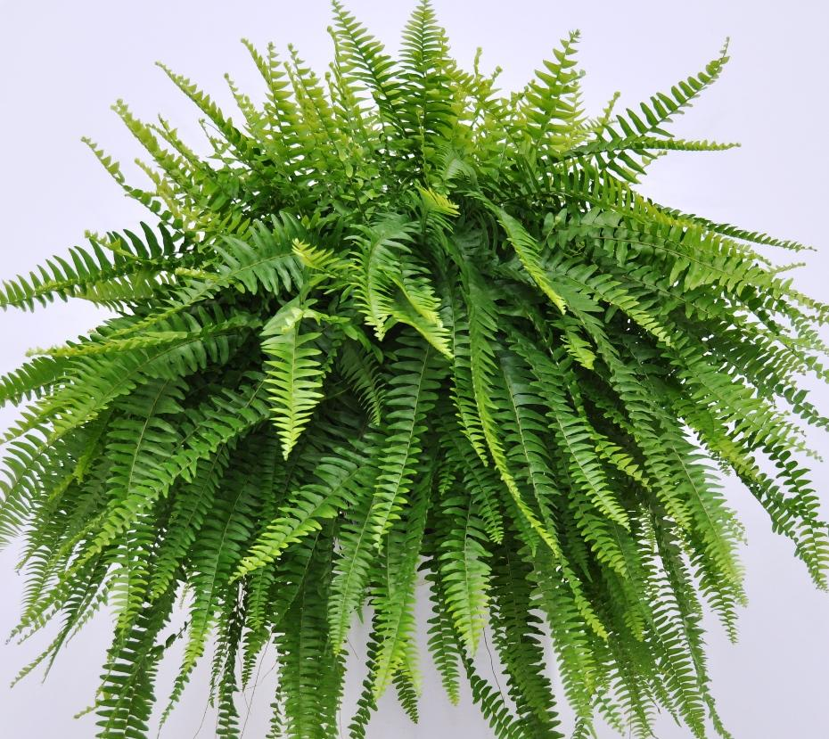
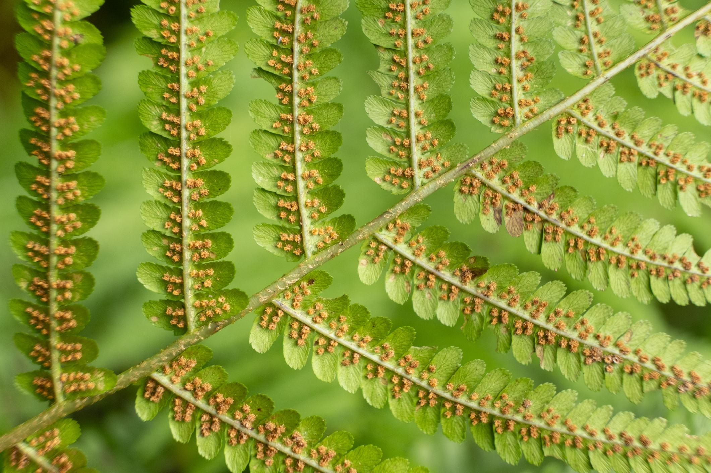
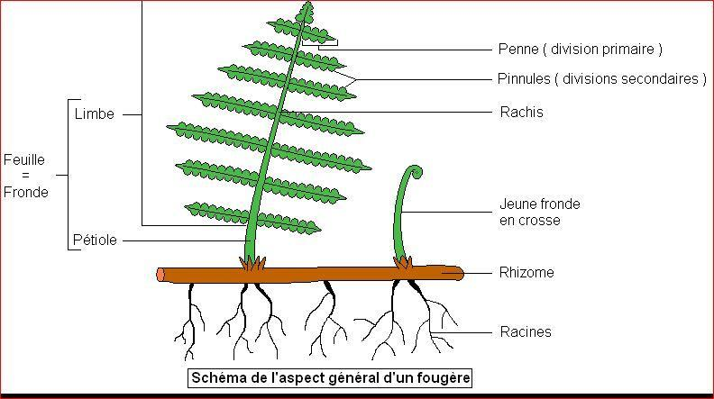
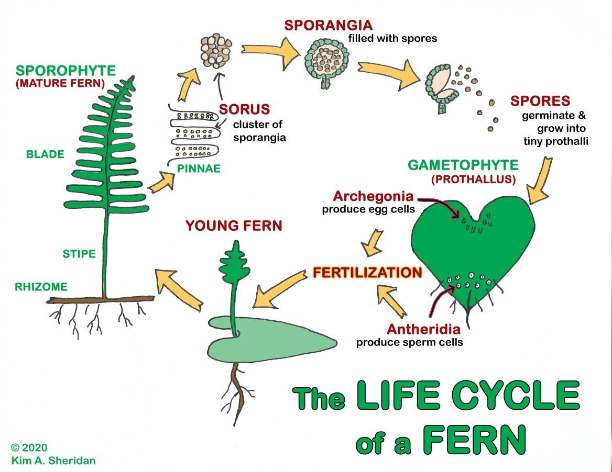

FOUGERES


PROBLEME RESOLU: se tenir debout et transporter l'eau
Les mousses constituent une étape importante dans l'adaptation des végétaux à la vie terrestre.
Ce sont les premiers vegetaux sur terre (hors de l'eau).
Elles possedent des adaptations comme une cuticule qui limite les pertes d'eau et des stomates chez certains sporophytes.
Elles restent toutefois très dépendantes de l'humidité pour leur reproduction.
APPAREIL VEGETATIF

La fougère possède un appareil végétatif bien différencié en racines, tige et feuilles (frondes). Sa tige est souvent souterraine et prend la forme d'un rhizome.
Les tissus conducteurs assurent la circulation des substances dans la plante. La fougère visible correspond au sporophyte, qui est la génération dominante.
CYCLE DE REPRODUCTION

La fougère se reproduit par des spores qui sont généralement produites dans des structures regroupées en sores sous les frondes.
Après leur dispersion, les spores peuvent germer et former un petit organisme appelé prothalle. Les fougères ne produisent ni fleurs ni graines.